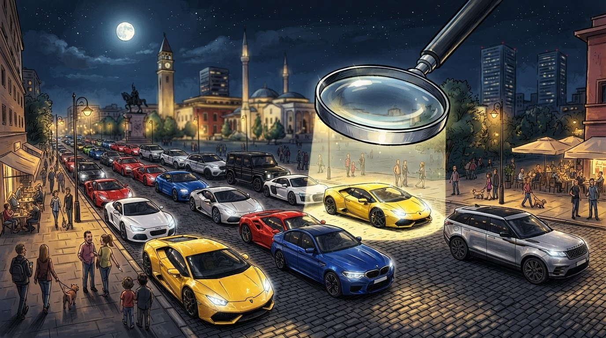

Terrasa — 31 vjet.
Showbiz
Gazeta Satirike e Kosovës dhe Shqipërisë — lajme që nuk duhet t'i besoni, por i lexoni gjithsesi
Sot (e merkure, 30 shtator 2026) ne Prishtine eshte hapur "Stacioni Kulturor", ndersa festivali FemArt 14-te ka mbyllur edicionin e tij te 14-te — matematika e sektorit artistik del 1 godin e re + 1 festival i mbyllur + 1 ceremoni festive = 3 elemente qe lidhen.

Ne nje kohe kur Prishtina perpiqet te mbaje ritmin e nje kryeqyteti europian, nje godin e re ne qender te qytetit u ndez sonte me drite te ngrohte — "Stacioni Kulturor", qe sipas njoftimeve te seances se hapjes do te jete "shtepi e re per artistet dhe komunitetin".
Ceremonia e hapjes u mbajt ndersa FemArt 14-te, edicioni i 14-te i festivalit te arteve qe organizohet ne Prishtine, mbyll pas 30 ditesh aktivitete "nje kapitull te ri" per artin bashkekohor ne Kosove. Sipas nje kronike te Kallxo.com, "FemArt 14-te mbyllet me 30 shtator 2026" — qe do te thote "edicion i 14-te i perfunduar ne nje dite me nje godin e re te hapur".
"'FemArt 14-te' mbyllet me 30 shtator 2026. Ceremonia e hapjes se 'Stacioni Kulturor' ne Prishtine." — Kronika e Kallxo.com per hapjen e Stacionit Kulturor, e postuar me 30 shtator 2026.
Ne nje nate ku sektori kulturor i Kosoves ka 1 eveniment te ri + 1 eveniment te vjeter, matematika del e qarte: 1 Stacion i ri + 1 FemArt i 14-te + 1 ceremoni = tre elemente qe bashkohen ne te njejten data. Sipas redaksise jone, kjo eshte "matematika e sektorit artistik" qe ka levizur nga "1 projekt = 1 rezultat" ne "1 projekt = 3 rezultate".
Sipas burimeve te Ministrise se Kultures, matematika e sektorit artistik del: 1 Stacion kulturor + 1 FemArt i perfunduar + 1 ceremoni festive = 3 elemente qe lidhen. Por perfaqesues te sektorit artistik kane thene qe "ne realiteit kemi 3 projekte dhe 3 sfida" — qe ne terminologjine e Ministrise eshte nje "matematikë e perputhshme".
Disa analiste te arteve kane thene qe hapja e Stacioni Kulturor eshte "nje kapitull i ri", ndersa mbyllja e FemArt 14-te eshte "nje kapitull i vjeter qe mbyllet me 1 hapje te re" — qe ne kuptimin matematik sjell 1 fund + 1 fillim + 1 ceremoni = 3 elemente qe duhen "lexuar" ne te njejten kohe.
Ne nje vend ku sektori kulturor ka 1 buxhet qe "shperndahet 3 here", matematika e redaksise eshte bere "norma" — qe ne terminologjine e sektorit artistik eshte "3 fakte qe tregojne qe sektori eshte aktiv edhe kur nuk ka buxhet te mjaftueshem".
Ne fund, redaksia ritheon: edhe ne sektorin kulturor, numri i vertetë i ngjarjeve eshte 1 godin e re + 1 festival i mbyllur = 2 — por "numri qe perdor Ministria" eshte 2+1=3.
